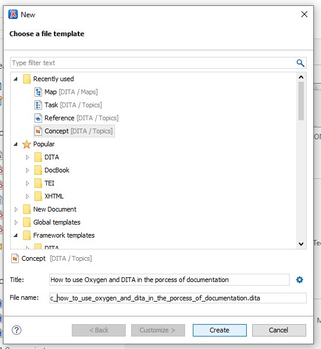

This section shows how to start a project in oXygen tool.
It presents the quick guide how to write your first XML document at the basic
level. It is a step-by-step guide.
To start your first document you have to create New Project. To create a
new project click New Project on Welcome box
Figure 1. Figure: New Project
Now choose a project template, for starters, leave Deafault project template.
Next, specify the name of the new porject file and choose the porject directory
(localization of the project). Click choose and Create.
Figure 2. Project File Name
Your Project Folder is created and ready to build.
Figure 3. New Project Folder
Next step you have to create TOPICS Folder where you keep all DITA Topic Types.
Roght-click PROJECT NAME and choose New → Folder →folder name: TOPICS → OK. This
is the Folder for DITA Topics.
Figure 4. New TOPICS Folder
Figure 5. TOPICS folder
Figure 6. TOPICS
To keep images you need to create another Folder for IMAGES. It is the same way
as TOPICS. Right-click the project PROJECT NAME and choose New → Folder
→folder name: IMAGES → OK.
Creating a DITA Topic in Oxygen XML Editor
Right-click the TOPIC Folder,
select New → File → Concept → Ttitle → File name → Create
Note: When name the File neme add “c_” at the
beginning of your file name. C means Concept
Figure 7. New File TOPIC

Add some text to the Concept. Inster the curson in the p element and
press EnteroXygen shows you which elements you can place in the current
position